Uma técnica minimalista desenvolvida pela Dra. Larissa Bulhões para construir resultados naturais e sofisticados utilizando apenas 2 tonalidades de resina.
Insira aqui o embed do seu player de VSL
Alguns dos nossos alunos chegaram ao Universo sem nunca terem executado um caso de lentes em resina.
Hoje, os resultados falam por eles.
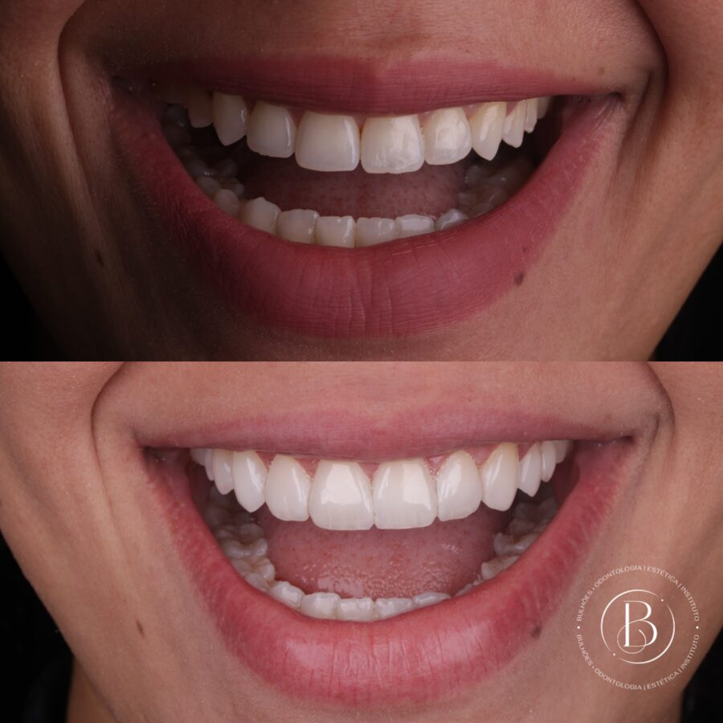
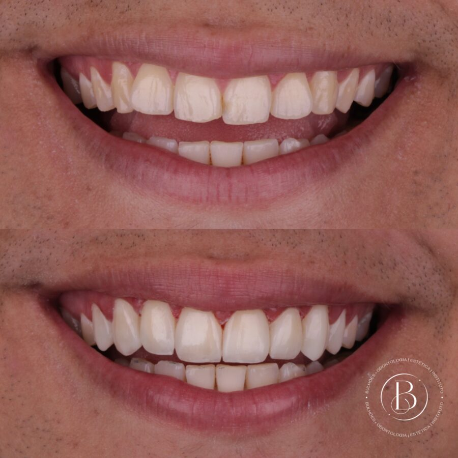
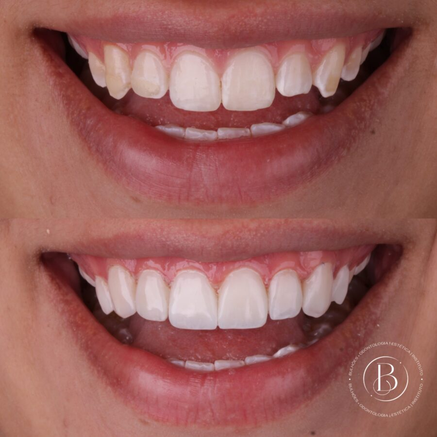
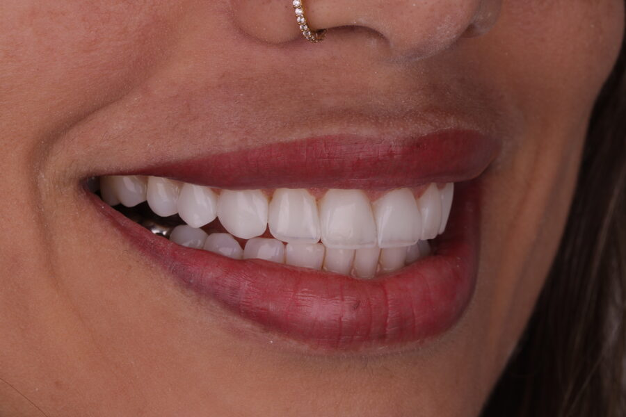
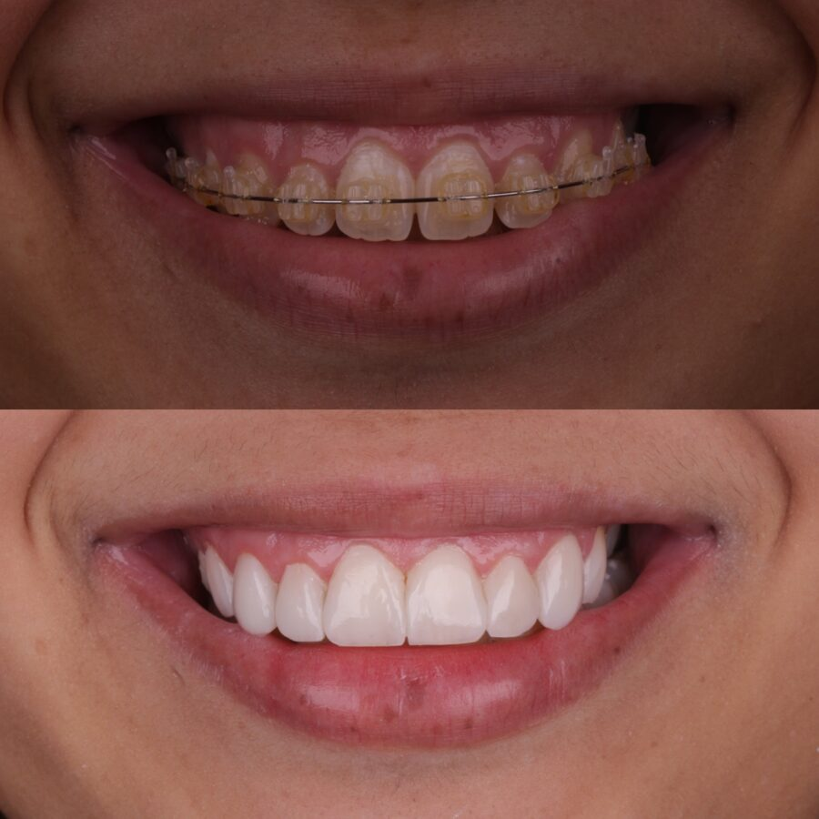
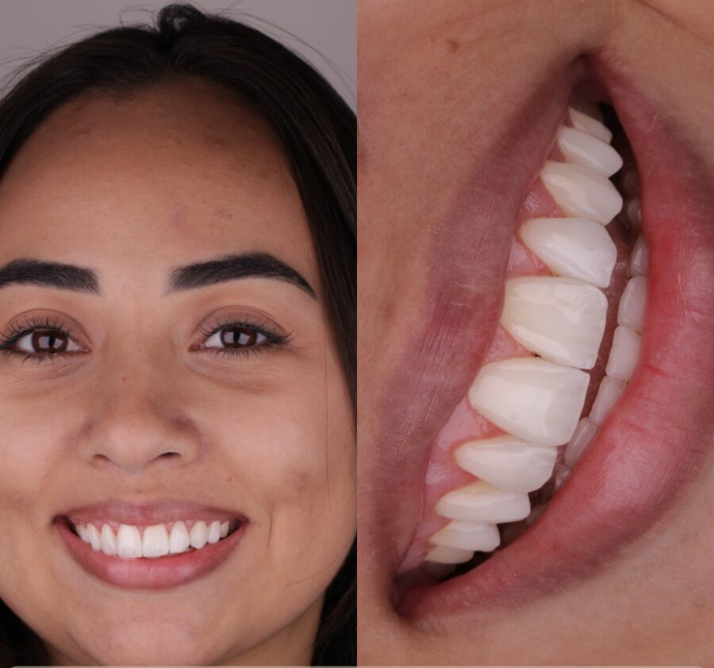
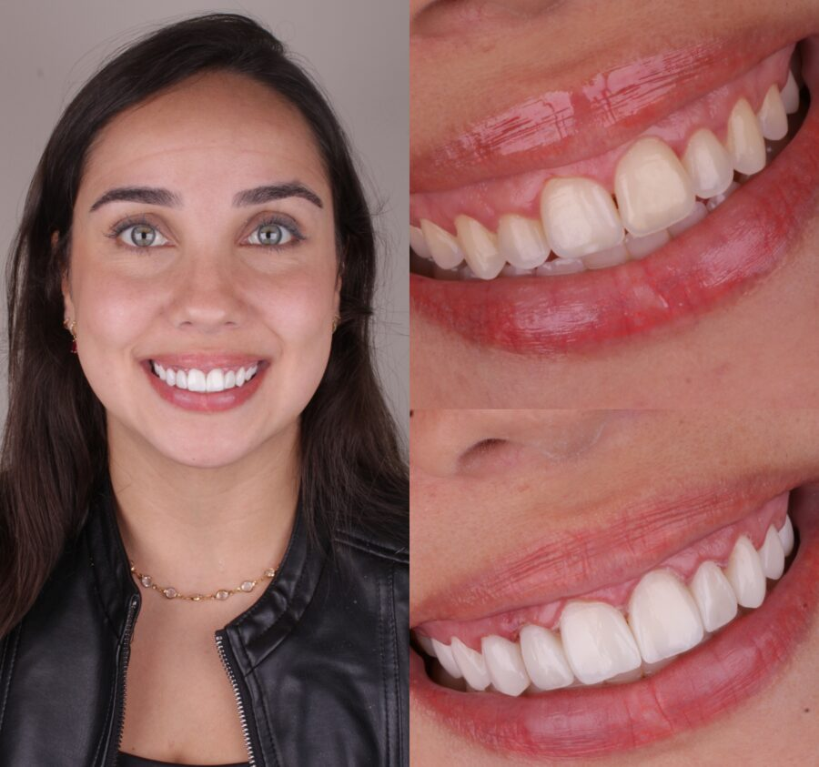
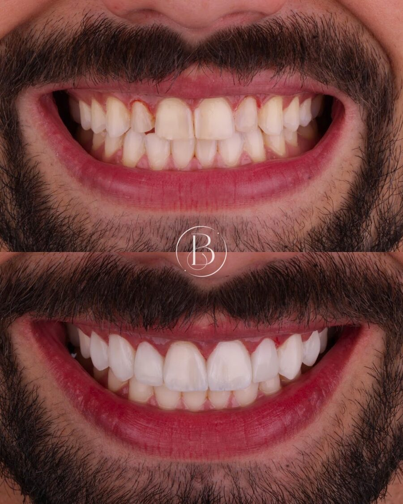
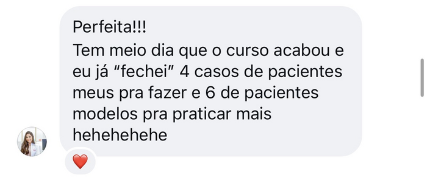
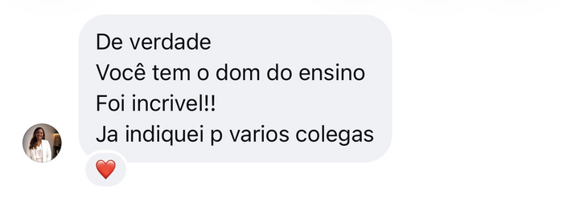
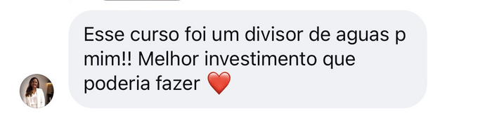
O Método Bulhões parte de uma visão minimalista: em vez de depender de inúmeras resinas e protocolos difíceis de reproduzir, você aprende a dominar os detalhes que constroem um resultado natural, usando apenas duas tonalidades de resina e, através da Estratificação Simplificada, determinados casos podem ser executados até mesmo com uma única resina, preservando naturalidade e translucidez.
Menos complexidade. Mais domínio sobre cada detalhe.
Indicações e contraindicações, planejamento do caso, levante de mordida com table tops, guia canina e verificação oclusal.
Proporções, zênites, ameias, áreas de espelho e sombra, volume, inclinação, anatomia primária e secundária e construção da curva do sorriso.
Da estratificação simplificada às técnicas mais avançadas, incluindo concha incisal sem guia de silicone e sem moldagem, translucidez incisal, mamelos, halo opalescente, cores e pigmentos.
Término cervical em 0, refinamento anatômico, sequência de brocas e protocolo completo de polimento para longevidade da cor e brilho.
Como realizar manutenções e fazer consertos sem precisar refazer todo o trabalho.
Acompanhe casos completos filmados em tempo real:
E novos casos e técnicas continuam sendo adicionados ao Universo.
E você não vai aprender apenas a executar.
Tudo o que você precisa para dominar o Método Bulhões em um único lugar.
Tudo isso pelo valor de menos de um caso de lentes superiores — no seu primeiro caso aplicando o método, você já recupera o investimento do curso.
R$ 2.497 à vista
ou 12x de R$ 249
Garantia incondicional de 7 dias.
A Dra. Larissa Bulhões começou a trabalhar com lentes em resina ainda no primeiro ano de formada.
Ao longo dos anos, desenvolveu uma forma própria de executar seus casos: simplificar a técnica sem simplificar o resultado.
Em vez de depender de inúmeras resinas, materiais e etapas difíceis de reproduzir, Larissa passou a concentrar sua técnica no domínio daquilo que realmente determina a naturalidade de uma lente.
Foi dessa filosofia que nasceu o Método Bulhões.
Uma técnica minimalista que permite construir casos utilizando apenas duas tonalidades de resina e, em determinadas situações, executar a estratificação com uma única resina, preservando naturalidade e translucidez.
Ao entrar para o Universo das Lentes, você tem acesso completo ao Método Bulhões. Se em 7 dias você não gostar, devolvemos todo o seu investimento, de forma simples e sem burocracia.